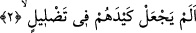

Ka’be’nin kapısını söktü, örtüsünü çıkardı. Tavanını yıktı ve bunları adamları arasında
taksîm etti. Zemzem’in kubbesini yerle bir etti. Mekke’de onbir gün kaldıktan sonra
yanına Hacer-i Esved’i de alarak buradan ayrıldı. Hacer-i Esved yirmi seneden fazla
Karmatîlerin yanında kaldı. İnsanlar teberrüken ellerini Hacer-i Esved’in yerine
koyuyorlardı. Hacer-i Esved’in geri alınması için Karmatîlere elli bin dinâr teklîf
edildi, kabul etmediler. Ta yirmi dördüncüsü Abbâsî halîfesi el-Mutî‘ li-Emrillâh
zamanında satın alınıp yerine konuncaya kadar. Bu halîfe Hacer-i Evsed’e gümüş bir
halka yaptırarak onunla iyice sağlamlaştırdı. Bu halkanın ağırlığı üçbin yediyüz doksan
buçuk dirhem idi.
Biri der ki: Hacer-i Esved yerinden söküldüğü zaman dikkatle baktım, sâdece baş
kısmı siyahtı, kalan kısımları beyazdı. Uzunluğu bir zirâ, yâni kolun dirsekten parmak
ucuna kadar olan uzunluğu kadardı.
Karmatilerden sonra, 413/ senesinde mülhidlerden birisi bir tokmakla Hacer-i
Esved’e üç darbe vurdu. Bu darbelerden dolayı taşın yüzü parça parça oldu. Ve taştan
tıpkı tırnak parçası gibi parçalar koptu. Taşın kırılması sebebiyle rengi sarıya çalan
haşhaş tanesi gibi parçacıklar oluştu. Şeybe oğulları bu parçacıkları topladılar, misk ve
reçine ile yoğurup çukur yerleri doldurdular ve bununla taşın yüzeyini sıvadılar.
Fakîr (Bursevî) der ki: Ebrehe ordusunun toptan helâk edilip de, daha sonra Kâbe’yi
topa tutan, Hacer-i Esved’i yerinden sökenlerin helâk edilmeyişinin cevâbı şöyle
olabilir: Âsîlerin kökünün kazınması ve buna yakın cezâlar bu ümmetten kaldırılmıştır.
Hârikulâde hâdiseler daha çok geçmiş ümmetler zamanında oluyordu. Kâbe İnsân-ı
Kâmil’den daha üstün değildir. Allah Teâlâ’nın âdeti, kendine düşmanca davranan, hattâ
savaş îlân eden bazı kimselere -her ne kadar gazabı şiddetli olsa da- müsâmaha ile
muâmele etmektir. Allah Teâlâ imhâl eder/mühlet verir; ama hiçbir zaman ihmâl etmez.
Allah’ın lâ’neti zâlimlerin üstüne olsun!
2. Onların kötü planlarını boşa çıkarmadı mı?
Bu âyet-i kerimenin başındaki soru hemzesi “takrîr” içindir; yâni bir gerçeği
vurgulamak amaçlıdır. Allah Teâlâ onların tuzaklarını zâyî ettiği ve hedefine
ulaştırmadığında onları boşa çıkarmış demektir. Nitekim Allah Teâlâ’nın, “Kâfirlerin
tuzağı elbette boşa çıkar” (Mü’min, 40/25) âyetinde yer alan, “dalâl” kelimesi de aynı
şekilde anlaşılmalıdır.
Allah Teâlâ, onların Kâbe’yi ziyâretçisiz bırakarak kullanılmaz hâle getirme ve tahrip
etme yolundaki hîlelerini ve tuzaklarını boşa çıkardı ve zâyî etti. Çünkü Allah Teâlâ,
onları en kötü biçimde helâk etti, bunun ardından onların Kâbe’ye karşı besledikleri
niyetlerinin aynısı ile kendilerine karşılık verdi. Çünkü yaptıkları kiliseyi tahrip etti.